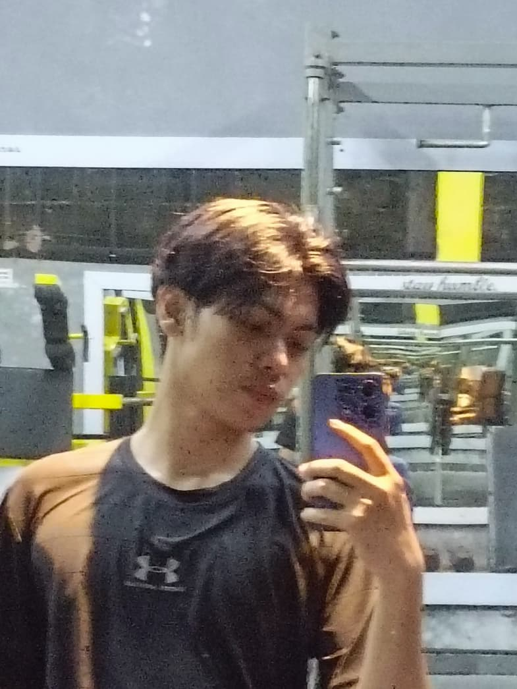

about me
Tempat/Tanggal lahir:Medan 16 februari 2007
Muhammad Faisyar Rizqi adalah seorang mahasiswa Teknik Informatika UMRAH berusia 19 tahun yang memiliki disiplin fisik tinggi sebagai atlet Taekwondo dan praktisi seni tari, serta dikenal ulet dan bermental baja dalam menghadapi tekanan akademik maupun kompetisi. Berpikir analitis dan strategis, ia mampu membaca dinamika sosial yang kompleks dengan kepala dingin, sekaligus memiliki ketahanan emosional yang kuat dalam menyeimbangkan ambisi pribadi, seni, dan hubungan sosialnya.
Skill
Artis & Desainer Visual (Jago gambar, UI/UX dengan Figma & Canva, video editor/animator CapCut) Penari & Koreografer (Berpengalaman sejak kecil, spesialis urban & lyrical hip-hop) Atlet Taekwondo (Disiplin tinggi)
Gender:Pria
IG:@faisyartzy